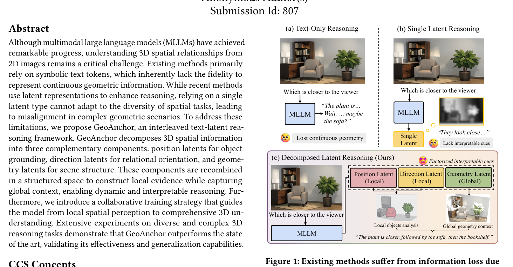
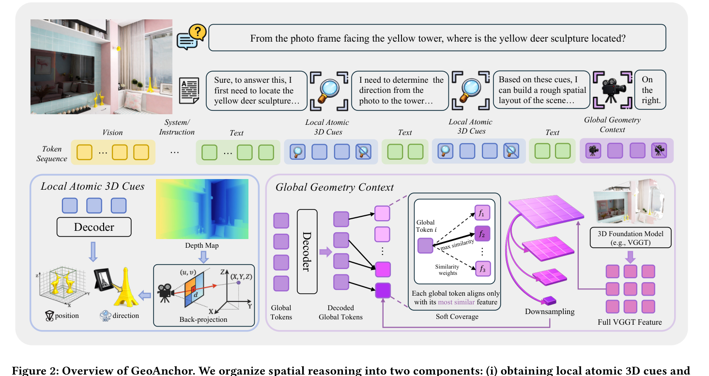
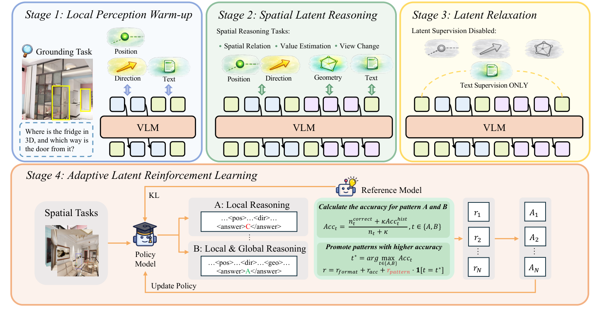

PAPER · 2026
GeoAnchor
Collaborative Reasoning via Latent Decomposition for 3D Spatial Understanding
GeoAnchor 在文本推理之间插入位置、方向和场景结构三类连续潜变量，用它们辅助回答 3D 空间问题。
- 作者
- Anonymous（ACM MM'26 双盲投稿，Submission Id: 807）
- 入库
- 2026-09-14
- 原文
- Zotero
五分钟重建
把几何中间量反复写成离散文本，可能损失细节，也可能让推理依赖语言线索。GeoAnchor 让文本规划与连续潜变量交替，分别表示位置、方向和场景结构。
局部与全局分工
position latent 表示物体位置，direction latent 表示方向，geometry latent 表示整体结构。
用几何教师热身
局部潜变量接受坐标与方向监督。少量全局 token 用 soft coverage 对齐较多 VGGT 特征，再经 projector 回到输入空间。
松弛后选择模式
S3 撤掉显式几何损失、保留文本损失；S4 用 GRPO 和 pattern reward 学 local-only 或 local+global 的选择。
具体例子（教学假设）：问“相框相对雕塑朝哪边”，需要两个位置锚和一条方向箭头。问更依赖房间布局的问题时，整体 geometry 提供另一类条件。这个例子说明分工，不保证模型每次都选对模式。
边界：latent 仍是有限精度向量，不是无损的真实 3D 场景。撤掉几何监督后的性能提升是消融观察；t-SNE 和注意力图不能单独证明所有几何信息都被完整保留。
先预测，再展开答案
让 8 个 geometry token 对齐大量 VGGT 网格特征，为什么不必一格配一个 token？
查看机制解释
soft coverage 要求网格特征得到覆盖，而不要求固定一一对应。平衡项抑制所有网格挤向少数 token，避免浪费其余容量。
关掉提示后解释：projector 在连接哪两个向量空间？它为什么与三类潜变量的分工是不同问题？
2026-10-04：讲解与练习待试用，本次未进行理解检验；此处不记录复测通过。
一页看懂
02问题
坐标写成文字经「连续到离散」量化压缩，丢精度还稀释空间语义在注意力里的权重；单 latent（如深度 token）一种潜变量包打不了多样空间任务，且只有全局视角缺局部物体证据。
方法
推理轨迹改成文本段与潜变量段交错：position / direction 两类局部 token 由 3D 坐标和方向显式监督，geometry 全局 token 用 soft coverage 对齐 VGGT 特征；四阶段训练从局部热身到 GRPO 模式自适应。
结果
Qwen3-VL-2B 底座：SPAR-Bench 68.4、SPBench 69.7、跨域 ViewSpatial 47.0 全场第一；但前两个基准与训练数据同源，+36.0 的头条数字要打折。

GeoAnchor 在文本推理之间插入位置、方向和场景结构三类连续潜变量，用它们辅助回答 3D 空间问题。
关键机制: latent token 与三类分解
03latent token 不从词表查表，是模型自己生成的连续 hidden state：在推理轨迹的规定位置划出潜变量区，position / direction 各 2 步、geometry 8 步。整条轨迹形如 文本段 + 潜变量段 交错，文本负责语义规划，潜变量承载连续几何。
生成的 hidden state 在输出空间，下一步要吃的 embedding 在输入空间，两个流形不同；直接塞回去会 latent drift（一步错步步错）。projector = LayerNorm + MLP 残差变换，把输出向量翻译回输入空间再喂回去。
| 潜变量 | 分工 | 监督 |
|---|---|---|
| position（局部） | 物体 3D 坐标，像钉锚 | 线性头解码，Smooth L1（抗离群，GT 本身来自深度估计有噪声） |
| direction（局部） | 物体间方向向量，像箭头 | 线性头解码，cosine loss（只管朝向不管长度） |
| geometry（全局） | 场景整体结构，像轮廓图 | soft coverage 对齐 VGGT 末层特征（见下节） |

关键机制: soft coverage 与四阶段训练
04VGGT 特征是高分辨率网格（一大堆向量），geometry token 只有 8 个。严格一一配对等于强迫 8 个值班员各包干固定一片工单，紧凑表示被撕碎。soft coverage 只要求每个 VGGT 特征至少被某个 token 认领（覆盖项），且 8 个 token 工作量均衡（平衡项，防表示坍缩）。Table 5：soft coverage 三基准平均 61.7，dense 的 mean pooling 57.4、adaptive pooling 59.3。
| 阶段 | Loss | 在干嘛 |
|---|---|---|
| S1 局部热身 | NTP + Lpos + Ldir | 550k grounding 只练局部 token，给 latent 打接地底子（Fig. 5：无 S1 答案对 latent 注意力约 6%，有 S1 涨到约 15%） |
| S2 空间潜推理 | + Lgeo | 105k 多样推理数据，联合局部与全局 |
| S3 latent 松弛 | 只留 NTP | 撤全部几何监督，让 latent 弹回语言流形与几何流形的兼容位置 |
| S4 模式 RL | GRPO + pattern reward | 学「够用的局部就别拉全局」：两种模式各记 EMA 历史准确率，选高者的额外 +0.5，奖励用对模式而非答对 |

证据与边界
05| 打折点 | 说明 |
|---|---|
| 局部监督是伪标签 | position/direction 的 GT 来自 Depth Anything v3 单目估计加反投影；ScanNet 自带传感器深度却未用，论文未解释 |
| 原文数字瑕疵 | Table 5 Linear Interpolation 行三列均值应为 50.4，表中 avg 写 37.8，疑笔误；Intro「超 GPT-4o 18.0%」口径对不上，引用以表格数为准 |
| 复现信息缺口 | VGGT 是否冻结、backbone 是否全参、优化器、硬件、代码开源与否均未报告 |
卡壳点
06Q：verbalization 除了丢精度、稀释注意力权重，还损失了什么？（Q1 补齐）
语言先验主导：推理全程在文本里走，模型用语言直觉代替几何证据答题。表格证据：text CoT SFT 不稳定优于 vanilla SFT（三基准平均 51.7 vs 51.8 略降）。
Q：去掉 soft coverage 平衡项的极端形态是什么？（Q2 点透）
不是「有的多有的少」的一般不均衡，而是表示坍缩：所有 VGGT 特征挤着认领同一个 geometry token，其余 7 个闲置，8 个 token 的容量退化成 1 个。平衡项（本质是分配均匀度的正则）防的就是这个病。
Q：Stage 3 为什么不会把几何「忘光」？机制层怎么讲？（Q3 补齐）
几何监督已经影响了权重，文本目标可继续利用其中有用的表示。这是机制解释，不是完整保留几何信息的证明。证据双件套：Fig. 4（S3 远超「多训一轮 S2」对照）+ Fig. 7（t-SNE 上 global token 落在 VGGT 与 text 之间）。
Q：Video-o3 vs GeoAnchor 还有一层更深的分叉是什么？（Q4 加深）
工具演化成本：Video-o3 的工具是可插拔的（兼容调用接口下可尝试替换工具；新接口与使用策略是否需要再训练，仍须验证），GeoAnchor 的「工具」（VGGT、Depth Anything）是训练时烧进权重的，换几何教师等于重训。GeoAnchor 论文自己列的适用边界（静态图像、室内场景）也支持动态场景选 Video-o3 路线。